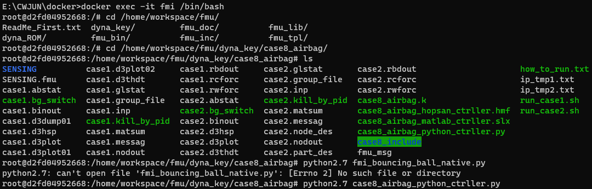

Docker와 FMI를 이용한 LS-Dyna Cosimulation
1. Introduction
해당 문서는 docker를 사용하여 LS-Dyna에서 FMI를 통한 Cosimulation에 대한 내용을 설명합니다.
docker의 실행은 Windows 운영체제에서 테스트 되었으며, linux 및 mac os에서는 테스트 되지 않았습니다.
2. Xming 설치하기
Xming은 이후에 진행되는 LS-Dyan와 FMI의 Cosimulation에서 python을 이용하여 LS-Dyna 시뮬레이션이 진행되면서 각 time-step의 결과들을 얻고 얻은 결과을 이용하여 계산된 결과들을 plot 할 때 생성되는 gui를 표시할 서버를 연결시키기 위한 도구로 사용됩니다. Xming은 아래 링크에서 다운로드 받을 수 있습니다.
https://sourceforge.net/projects/xming/
3. docker 설치 및 예제 실행
설치하기
docker는 아래 링크에서 플랫폼별 docker를 다운로드 받을 수 있습니다. 이 후 docker의 설치과정에 대한 설명은 생략합니다.
https://www.docker.com/
설치가 완료되면 아래 사진과 같은 실행화면을 확인할 수 있습니다.
docker 이미지 다운로드
docker 실행 화면에서 아래 사진과 같이 상단 Search에 kostech/ubuntu-fmi를 입력 후 검색되는 항목에서 Pull을 클릭하여 이미지를 다운로드 받습니다. 해당 이미지는 ubuntu 환경에서 LS-Dyna를 이용한 FMI Cosimulation을 테스트 하기 위한 Python 및 필요한 설정들이 되어 있습니다.
FMI 예제 파일 다운로드
아래 링크에서 FMI 예제 파일을 다운로드 받습니다.
https://drive.google.com/file/d/1Z_kcDda29U1VxK_le0MivgaSCJPDzhJK/view?usp=share_link
다운로드 받은 후 압축을 해제합니다. 설명을 위해 여기서는 압축을 해제한 폴더를 D:\dyna-fmi로 가정하겠습니다.
docker 컨테이너 생성 및 실행
Windows에서 Command Window 창을 실행하고 다음 명령어를 입력합니다.
docker run –cap-add=NET_ADMIN -e DISPLAY=host.docker.internal:0.0 -p 39400:39400 –volume D:\dyna-fmi:/home/workspace –name=fmi -it kostech/ubuntu-fmi:1.0
위 명렁어를 입력하게 되면 아래 사진과 같이 linux 환경으로 접속됩니다. 아래 사진에서 –volume=E:\CWJUN\docker\dyna-fmi는 위에서 가정한 D:\dyna-fmi 경로에 대한 작성자 본인의 디렉토리이므로 각자 FMI 예제 파일을 압축 해제한 경로로 입력하시면 됩니다. 여기서 cd /home/workspace를 입력한 후 ll 명령어로 디렉토리를 확인하면 D:\dyna-fmi 경로가 mapping되어 있는 것을 확인 할 수 있으며 상호 동기화 되기 때문에 –volume으로 공유한 경로에 대해서는 파일 추가/삭제/수정 등의 작업등을 Windows 환경에서 하실 수 있습니다.
예제 (case8_airbag) 실행
“cd /home/workspace/fmu/dyna_key/case8_airbag” 을 입력하여 예제가 있는 경로로 이동합니다.
run_case1.sh 파일과 run_case2.sh 파일에서 LSTC_LICENSE_SERVER 값을 본인 LS-Dyna 라이선스 서버 호스트로 변경합니다.
./run_case1.sh 명령어를 통해 case1을 실행합니다. 해석이 종료된 이후에는 아래 사진과 같이 case2를 진행하는데 필요한 파일들이 생성됩니다.
다음으로 ./run_case2.sh 명령어를 통해 case2를 실행합니다. 실행 후 아래 사진과 같이 ‘Listening for incoming connections on port: 39400 …’ 메세지 이후로 진행되지 않고 대기중인 상태에서 새로운 Command Windows 창을 실행 합니다.
새로 실행한 Command Windows 창에서 docker exec -it fmi /bin/bash 명령어를 입력하여 docker 컨테이너에 접속합니다. 접속 후 아래 사진과 같이 예제 경로로 이동 후에 python2.7 fmi_bouncing_ball_native.py를 입력하여 LS-Dyna에서 계산되는 각 스텝의 결과를 처리하기 위한 python 코드를 실행합니다.

python 코드를 실행하게 되면 대기 중이던 case2 해석이 진행되며 해석이 종료 된 후에서 python 코드에서 계산된 결과들에 대한 그래프가 나타납니다.